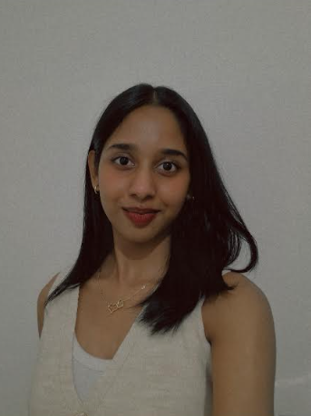
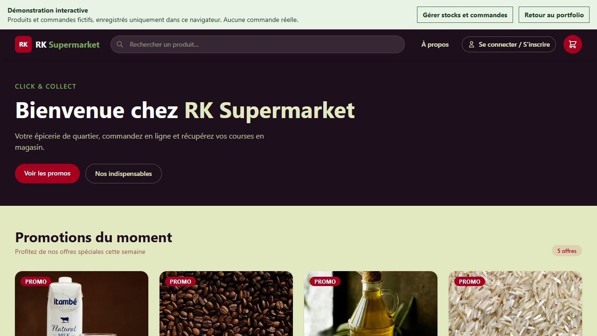
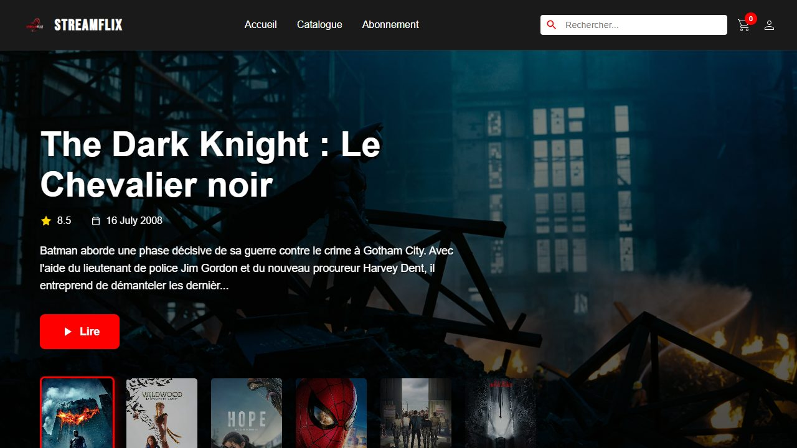

01 / LANGAGES
Langages
TypeScript · JavaScript · Python · Dart · HTML · CSS / SCSS · SQL
Bienvenue sur mon portfolio
Développeuse web · Licence informatique à l’Efrei
Étudiante en troisième année de licence informatique, je développe des applications web, de l’interface utilisateur aux services et aux données.
Stage de fin d’études · 4 mois à partir d’avril
À propos
En troisième année de licence informatique à l’Efrei, j’allie développement web et sensibilité produit.
Rigoureuse et curieuse, j’aime comprendre un besoin, travailler en équipe et contribuer à la création d’applications utiles. Mon échange académique à APU, en Malaisie, m’a permis de découvrir un autre environnement d’études.
Je recherche un stage de fin d’études de quatre mois à partir d’avril, dans le développement d’applications SaaS.
Atouts : empathie, gestion du stress, curiosité, audace et motivation.

CRÉER · APPRENDRE · EXPLORERMes outils
Des technologies pour construire des applications, de l’interface aux données.
01 / LANGAGES
TypeScript · JavaScript · Python · Dart · HTML · CSS / SCSS · SQL
02 / WEB
Angular · Node.js · Vue.js · Alpine.js · API REST · Flutter
03 / DONNÉES
MySQL · Oracle Database · DBeaver · Git · GitLab · Jira
04 / ENVIRONNEMENT
Unix / Linux · scripting Shell · méthode Agile
Mon parcours
Des projets concrets, en équipe et au plus près des besoins.
Conception d’un prototype de click & collect pour faciliter les commandes d’une épicerie de quartier.
Vue.js · Node.js · Express · MySQL
Découvrir le prototype ↗Stage au sein de l’équipe Synapse, sur le programme TENO et l’application Ordinal.
Angular · TypeScript · Spring Boot · Oracle
Stage consacré à une application mobile multiplateforme en Dart et Flutter.
Dart · Flutter
En pratique
Découvrez quelques applications et interfaces que j’ai réalisées.

PROTOTYPE DE STAGE
Une application pour gérer le catalogue, les stocks et le suivi des commandes d’une épicerie.
Essayer la démo ↗Données fictives enregistrées dans ce navigateur. Aucune commande réelle.

PROJET ACADÉMIQUE
Site de streaming en PHP natif : architecture MVC, catalogue, sessions et simulation d’un parcours d’achat.
Visiter StreamFlix ↗Catalogue connecté à TMDB ; comptes et achats indisponibles dans la démo en ligne.
PROJET EN ÉQUIPE
Développement d’une interface responsive en JavaScript, modélisation de l’expérience utilisateur et intégration front-end.
Dans les coulisses
Projet à la loupe : RK Supermarket, du catalogue à la gestion.
Recherche de produits, promotions, panier et choix d’un créneau de retrait.
Vue.jsGestion des produits, des commandes et de leur suivi avec une API.
Node.js · ExpressOrganisation des produits, des stocks et des commandes dans une base de données.
MySQLMon apprentissage
Efrei · Villejuif
Troisième année · Depuis septembre 2024
APU · Malaisie · Deux mois, de fin avril à début juin 2026
Initiation à Power BI et à l’intelligence artificielle, avec un projet collectif autour d’un chatbot.
Lycée Jean Jaurès · Argenteuil
2023 · Spécialités NSI et mathématiques
Niveau B2 · TOEIC blanc : 895
En dehors du code : Pilates, badminton à l’Efrei et lecture de livres de développement personnel.
Contact
Vous cherchez une stagiaire en développement ou souhaitez échanger ? Je serais ravie de vous lire.
kavisha.rubakanthan@gmail.com